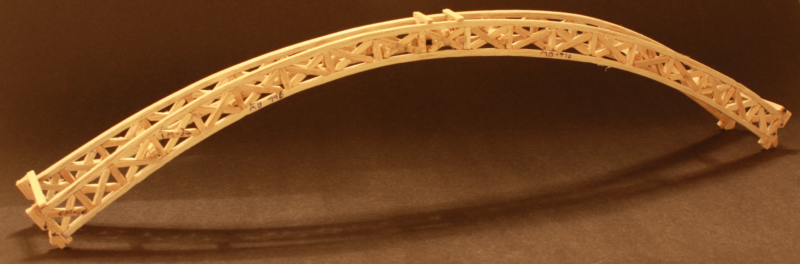
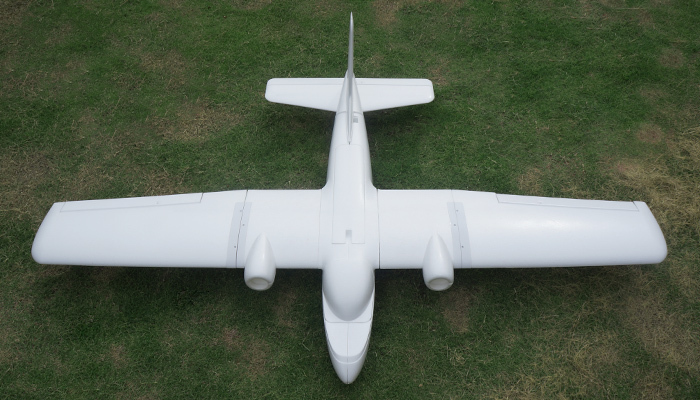

Construction Materials
This page will introduce you to the most popular materials used to construct remote control airplanes.
Rc-planes can be many different materials but most likely to be made out of either foam or balsa-wood. Most planes are made out of foam due to the light-weight and reasonable integrity ratio. Also it is due to the easy shaping and foaming. But as foam is weak the rudders and wings are often reinforced by carbon rods.
Rc planes can be made out of different materials but some planes are made out of Balsa wood. The good thing about balsa wood is that it is strong, cheap, reliable and light in weight. The cons about balsa wood is that they it goes very soft when wet and can end up in breaking. The image above is a example of something made out of balsa wood.
Another material a RC plane can be made out of is foam, being the most common material for planes, foam is light, cheap, easy to mold and very aerodynamic. Con of foam is the strength and how easy it is to break. The image above is an example of a plane made out of foam.
There are many images used on this website that have been carefully selected from the internet. We have been careful not to use any images that are not licensed for reuse with modification. If there are any image that are not licensed for reuse then please report what image it is and what page its on to the email "l.finlayson@stpauls.school.nz".
To close this window please click anywhere